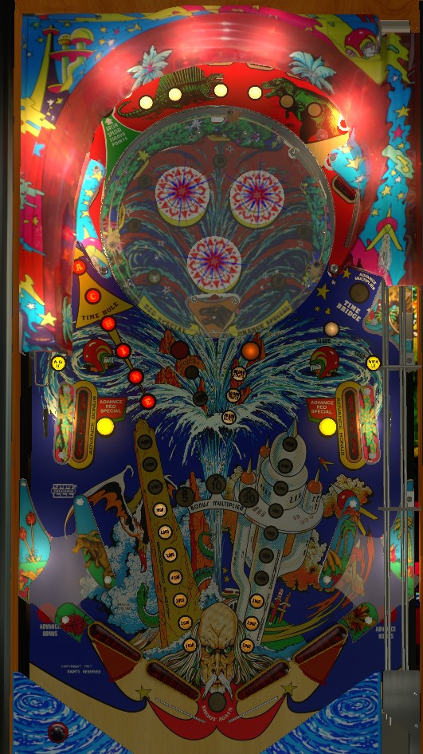

Not to be confused with Time Fantasy (Williams, 1983) or Time Machine: Where You Go Back In Time (Data East, 1988).
Shoot the Time Hole on the left to move between the Future, where the mini-playfield is raised, and the Past, where it is lowered. Scoring is significantly higher in the Past than the Future. Completing the 1 through 7 standup targets in the Past adds a letter to Machine. Completing the A through F targets in the Future or any drop target bank advances the Orange Special target toward extra ball and lights the Red Special target, which awards a Machine letter. Spell Machine to qualify a super award at the Time Hole, which can be a free game, an extra ball, or 1,000,000 points.
All balls start in the Future, with the mini-playfield raised. Shooting the Time Hole on the left scores 20,000 points and moves you to the Past or Future by lowering or raising the mini-playfield. Shooting the Green Special lane in the top left, which is only possible in the Past, will also take you to the Future, and the resulting kickout comes out from the Time Hole.
There are two targets labelled 1 on the left and right, and 6 targets at the back labelled 2, 3, 4, 5, 6, and 7. All targets start lit. Hit a lit target to score 100,000 points, advance the Past bonus, and unlight that target. Unlit targets score 30,000 points. Unlighting all targets will reset them, add a letter to Machine, and light the Green Special in the back left of the game for 150,000 points. These targets are an absolutely massive source of scoring.
The two 1 targets are always tied together, so that hitting either lit target gives credit for the 1. On easy settings, the following numbered targets will also be paired together, so that hitting either lit number gives credit for both: 2-7, 3-6, 4-5.
In the Future, the mini-playfield is raised and the pop bumpers are accessible. Bumpers always score 100 points. 6 standup targets labelled A through F surround the pop bumper nest. These targets start lit and always score 5,000 points as well as advancing the Future bonus. Unlighting all 6 targets advances the Orange Special target value and lights the Red Special target. On easy settings, the following numbered targets will be tied together, so that hitting either letter collects both: A-F, B-E, C-D.
Each drop target down scores 5,000 points and advances the current bonus (Past or Future). Completing either drop target bank resets that bank, lights the Red Special target if you are currently in the Future, and advances the Orange Special target.
The Red and Orange Special targets are part of the mini-playfield, and so can only be hit during the Future.
Completing a drop target bank or completing the A through F targets lights the Red Special target. Any time the Red Special target is lit, it starts with the red light flashing for about 20 seconds, before decreasing to the Advance Multiplier light for 10 seconds, then the 10,000 Points lit for 10 seconds, before shutting off entirely. When lit red, the Red Special target adds a letter to Machine, which is spelled in front of the Time Hole. Advance Multiplier advances the bonus multiplier in the sequence 5x-10x-20x. 10,000 points is self-explanatory. Hitting the Red Special target when it is lit in any way completely unlights it. The Red Special target scores 5,000 points and a Future bonus advance when not lit at all.
Any completion of 1-7, A-F, or either drop target bank advances the Orange Special target value. The Orange Special scores 5,000 points when not lit, and is advanced to 30,000, then 50,000, then 80,000, then Orange Special. The Orange Special award is equal to 100,000 points and an extra ball. The Orange Special target always advances the Future bonus. Collecting a point value from the Orange Special target does not reset it, but collecting the proper Orange Special award completely unlights the target.
Hitting the Red Special target when it is lit red or completing the 1-7 sequence in the Past awards a letter in Machine (or 2 letters, on easy settings). When the word Machine is completed, the next shot to the Time Hole will score a super special instead of moving the player between time periods, after which all Machine letters are reset. The super special can score a free game, an extra ball, 1,000,000 points, or a "superbonus", which lights the word Superbonus on the backglass and does nothing else (used in some places to signify an earned free drink, or similar).
The right ramp loops all the way around the playfield, dropping the ball off in the lane behind the left drop targets. A precise, powerful shot is needed to get all the way around the ramp. A full shot to the ramp scores and advances the lit value; 10,000 points, then 30,000 points, then 30,000 points plus advancing the bonus multiplier in the sequence 5x-10x-20x. There are two switches on the ramp- one about halfway around, and one near the exit- that both award the listed point value, but only a full ramp shot advances the bonus multiplier. Depending on game settings, the ramp may be lit for 30,000 right away.
Advance the current Past or Future bonus, plus scoring 100 points or 1,000 when lit. If a lane is not lit automatically, complete the drop target bank on the same side of the table to light it.
Time Machine has double flippers on both the left and right sides. The upper flipper in each pair is positioned at a slightly flatter angle and has a smaller range of motion compared to its lower counterparts. The upper flippers also have blockers on their tips, making it impossible to drain the ball between the upper and lower flipper on a given side when they are raised. There are no conventional in lanes, but the behind-drop target lanes typically feed the ball to the flippers. The out lanes each contain a rollover button that scores 10,000 points and advances the current Bonus.
There are two separate bonuses: Past and Future. The Future bonus can only be advanced when you are in the Future, and same with the Past. Each bonus maxes out at 10,000 points. Standup targets, drop targets, and rollover lanes advance the current time period's bonus. The right ramp and Red Special target can both advance the bonus multiplier in the sequence 5x-10x-20x when lit. Max bonus is 2x 20x 10,000 = 400,000 points. There is no mid-ball bonus collect and there is no way to carry over any part of the base bonus or multiplier.
On the final ball of the game (e.g. ball 3 of a 3-ball game), the ball in play display will read "Game Time Bonus: 10" as soon as the ball enters the playfield. During this final ball, every 3rd switch hit anywhere on the playfield adds 1 to the Game Time Bonus. Immediately after this final normal ball drains, the Game Time Bonus begins. Game Time Bonus is a timed bonus ball with unlimited ball save for as long as there is time on the clock.
If you drain during Game Time Bonus: a new ball will be fed to the shooter lane and play continues with no penalty other than the clock continuing to run.
If you tilt during Game Time Bonus: the entire playfield will go dark and the ball will be allowed to drain, with no further points being scored. The entire end of ball bonus including multiplier will be reset without being scored. If there is still time on the clock when the ball reaches the out hole, play will continue.
When Game Time Bonus ends: the announcer will count down your final 10 seconds on the clock. When the clock hits 0, all playfield lights go dark and the ball is allowed to drain, with no further points being scored. After the ball reaches the out hole, your end of ball bonus is scored, and the game either enters Game Over mode or transitions to the next player, who will play their final normal ball immediately followed by their Game Time Bonus ball.
If you collect an extra ball during Game Time Bonus: the clock immediately stops, and the previous rule of "every 3rd switch adds 1 to the clock" applies. When the ball drains and the extra ball is used, the Game Time Bonus ball will continue.
Remember that all players play their Game Time Bonus ball immediately after their final standard turn, and that the Game Time Bonus clock continues to run while the ball is in the shooter lane waiting to be plunged. Note as well that "seconds" of Game Time Bonus may not be equivalent to real-life seconds.